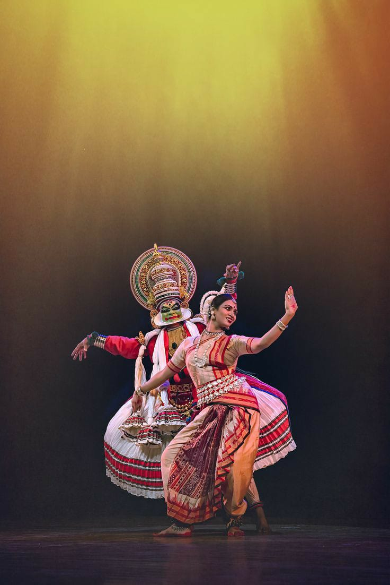

Bharathanatyam
Bharatanatyam is one of the 8 forms of dance recognized by Sangeet Natak Academy.
Bharatanatyam is an important classical dance form in India,
It originated in the temples of South India,particularly, Tamil Nadu.
It used to be performed by Devadasis, thus it was also known as Dasiattam.
There is a lot of visual evidence of Bharatanatyam in the stones and pillars of ancient temples.
Kathakali
Kathakali is the most popular dance form of Kerala.
Kathakali originated in Kerala over 300 years ago.
It is world-famous because it is a combination of many things,
like resplendent costume, devotion, drama, dance, music.
‘Kathakali’, an important genre in the Indian classical dance form, is associated with storytelling form of this art.
Kuchipudi
Kuchipudi is one of the classical styles of Indian dance.
Around the third and fourth decade of this century it emerged out of a long rich tradition of dance-drama of the same name.
In fact, Kuchipudi is the name of a village in the Krishna district of Andhra Pradesh. It is about 35 km. from Vijayawada.
Andhra has a very long tradition of dance-drama which was known under the generic name of Yakshagaana.
In 17th century Kuchipudi style of Yakshagaana was conceived by Siddhendra Yogi a talented Vaishnava poet and visionary
Odissi
Odisha, on the eastern sea coast, is the home of Odisha, one of the many forms of Indian classical dance.
Sensuous and lyrical, Odisha is a dance of love and passion touching on the divine and the human, the sublime and the mundane.
The Natya Shastra mentions many regional varieties, such as the south-eastern style known as the
Odhra Magadha which can be identified as the earliest precursor of present day Odisha.
The foundations of Odissi are found in Natya Shastra, the ancient Hindu Sanskrit text of performance arts.
Ballet
Ballet is a type of performance dance that originated during the Italian Renaissance
in the fifteenth century and later developed into a concert dance form in France and Russia.
It has since become a widespread and highly technical form of dance with its own vocabulary.
Ballet has been influential globally and has defined the foundational techniques
A ballet as a unified work comprises the choreography and music for a ballet production.
Hip-Hop

Hip hop or hip-hop is a culture and art movement that was created by African Americans,
Latino Americans and Caribbean Americans in the Bronx, New York City.
The origin of the name is often disputed. It is also argued as to whether hip hop started in the South or West Bronx
Hip hop culture has spread to both urban and suburban communities throughout the United States and the world.
In the 1970s, an underground urban movement known as "hip hop" began to form in the Bronx, New York City.
Jazz
Jazz dance is fast and fun. It uses upbeat music and leaps and turns to interpret traditional and not-so-traditional movements.
Keep reading to learn about the history of this exciting kind of dancing.
azz dance is based on dance moves that slaves brought to America. Slaver owners would
make the captured Africans dance as a way to keep them physically fit.
Originally, jazz dance referred to any kind of movements performed to jazz music, including tap dancing.
Modern Dance
Modern dance is a broad genre of western concert or theatrical dance which included dance styles such as ballet,
folk, ethnic, religious, and social dancing; and primarily arose out of Europe and the United States in the
late 19th and early 20th centuries.It was considered to have been developed as a rejection of, or rebellion against,
classical ballet, and also a way to express social concerns like socioeconomic and cultural factors.In the
late 19th century, modern dance artists were pioneering new forms & practices in what is now called aesthetic or free dance.